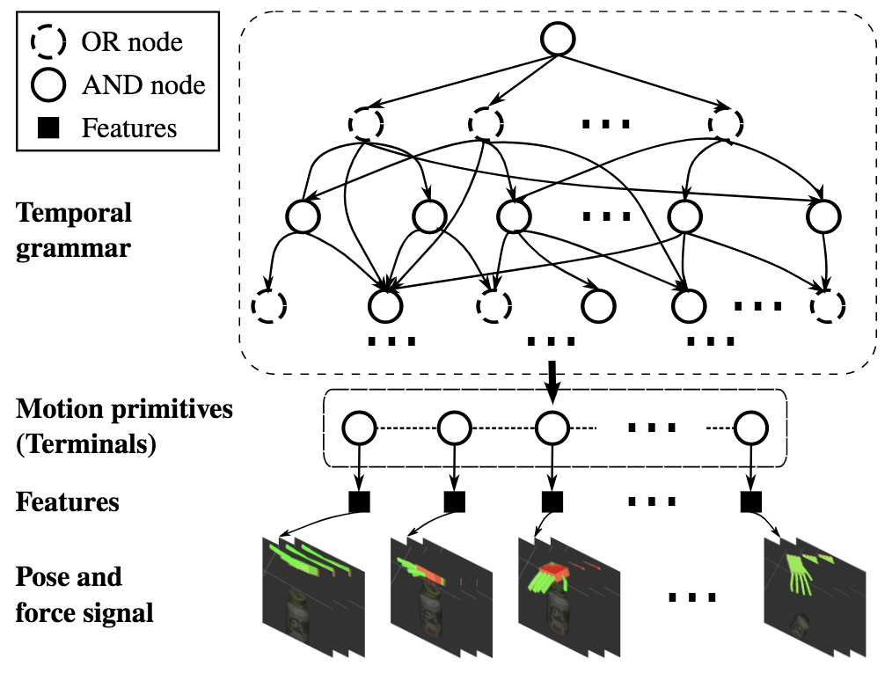
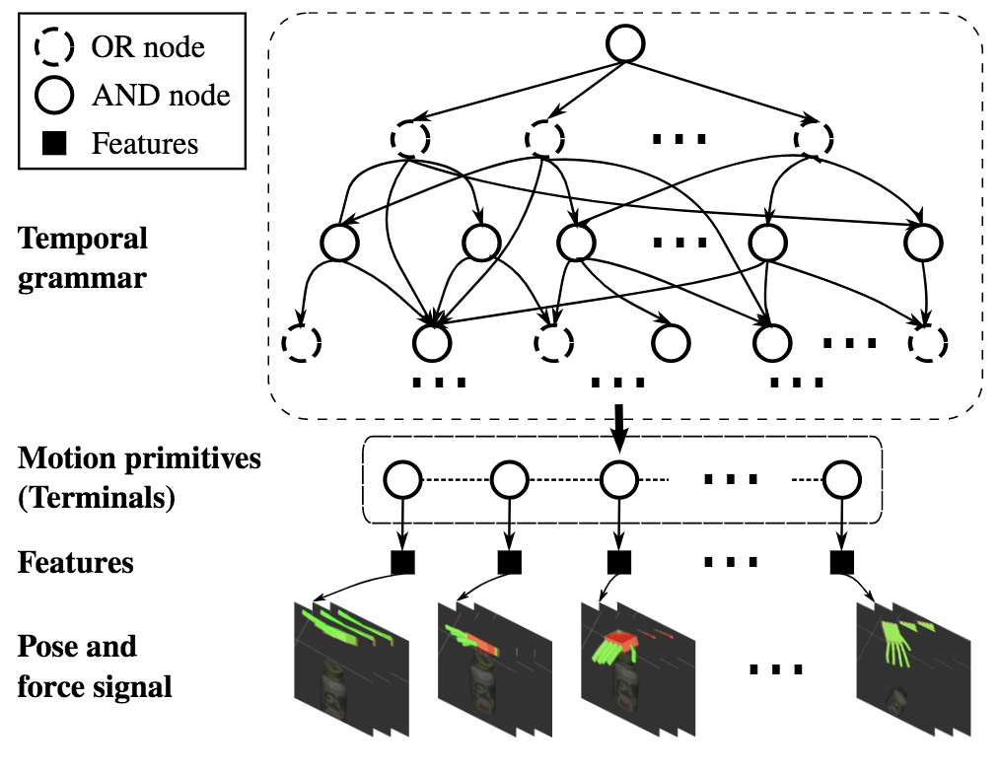
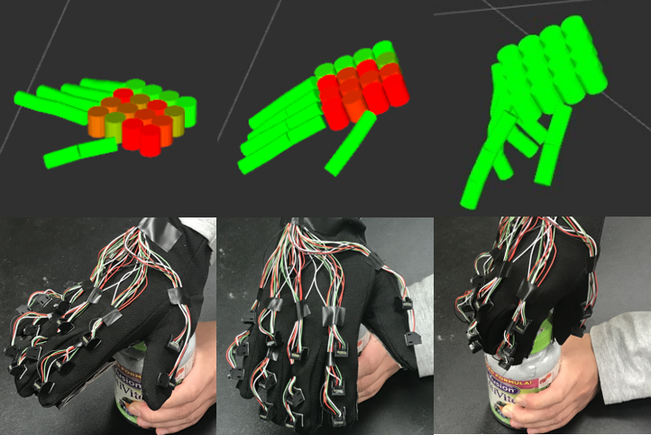
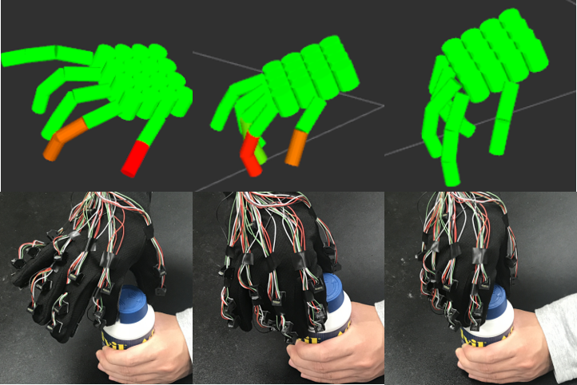
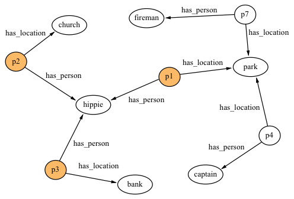
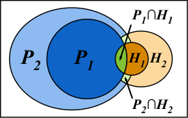

Publications
Human Causal Transfer: Challenges for Deep Reinforcement Learning
40th Annual Meeting of the Cognitive Science Society (CogSci), 2018


Conference Paper
Oral Presentation
Causal Learning
Unsupervised Learning of Hierarchical Models for Hand-Object Interactions
International Conference on Robotics and Automation (IRCA), 2018
 

Conference Paper
Learning from Demonstration
Feeling the Force: Integrating Force and Pose for Fluent Discovery through Imitation Learning to Open Medicine Bottles
International Conference on Intelligent Robots and Systems (IROS), 2017


Conference Paper
Learning from Demonstration
A Glove-based System for Studying Hand-Object Manipulation via Pose and Force Sensing
International Conference on Intelligent Robots and Systems (IROS), 2017


Conference Paper
Learning from Demonstration
High Performance Declarative Memory Systems through MapReduce
Software Engineering, Artificial Intelligence, Networking and Parallel/Distributed Computing (SNPD), 2015


Conference Paper
Declarative Memory
Brain Machine Interface Using Emotiv EPOC to Control Robai Cyton Robotic Arm
Aerospace and Electronics Conference (NAECON), 2015.
Conference Paper
Brain Machine Interface